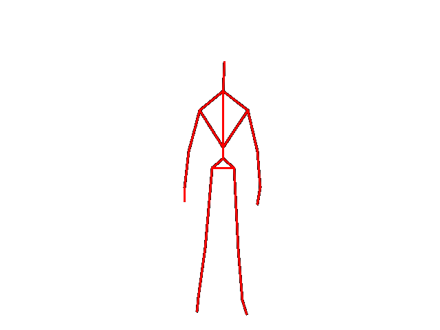
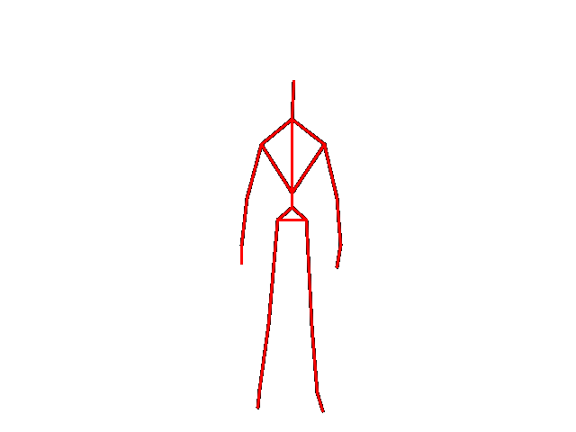
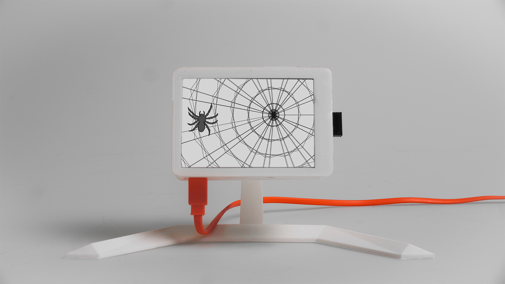
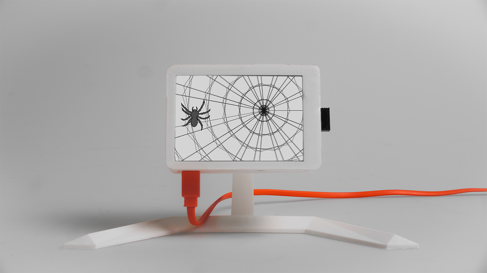
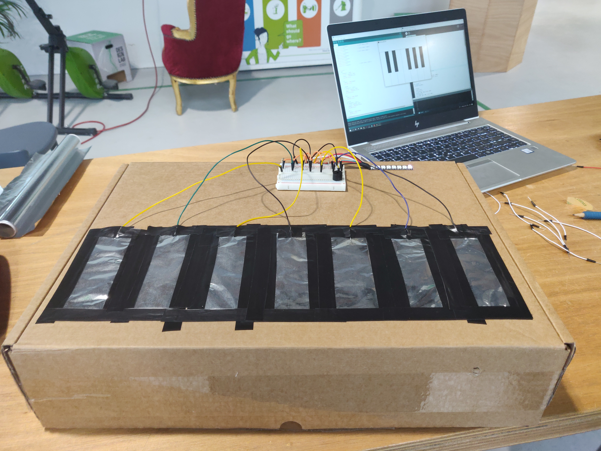
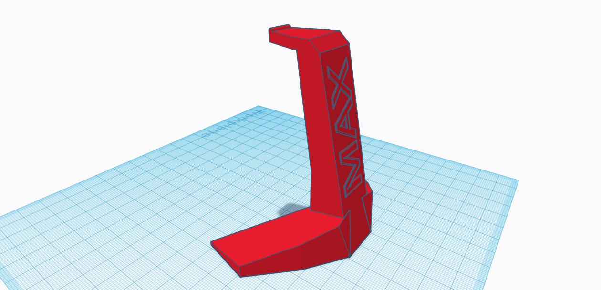

Posture Coach
For module 6 of CreaTe we developed an exercise assistant for personal use in gyms. The goal of our project was to help people who go to the gym in improving their posture, to reduce the number of injuries that are sustained in the gym. We created a lo-fi and high-fi prototype you can see here. An UI created in Figma.
 

Smart Technology Hackaton
On March 22 I visited the IBM headquarters in Amsterdam together with my project group. It was quite inspiring to meet Manfred Overmeen, the man that gave us the assignment for our project. He had his own office that was full of gadgets and gizmos. For example, at the entrance we were greeted by a speaking robot. A lot of technology in that room was stuff we covered in the study, like the arduinos laying around. Apart from being very useful for our project, the visit really showed me a job that resembles Creative Technology.
uChange at GOGBOT 2019
For module 4 of CreaTe we demo-ed our project installation on GOGBOT 2019 in Enschede. That year's theme was Bio-technology and info-technology. The interactions we incorporated into our design are:
1. Making a character using the touch screen
2.Physically changing the DNA spiral
The reason we chose to use a touch screen is the fact that it is easy to understand because everyone is used to using a touch screen nowadays furthermore it is easy to adjust if necessary.
The reason for choosing to physically change the DNA spiral is to make it fun for the participant to use and to have a unique way of interacting instead of buttons or levers.The reason this may be fun is that it is something physical. By being able to feel what you are doing you feel like you have more control over the installation.
Project at IBM
On March 22 I visited the IBM headquarters in Amsterdam together with my project group. It was quite
inspiring to meet Manfred Overmeen, the man that gave us the assignment for our project. He had
his own office that was full of gadgets and gizmos. For example, at the entrance we were greeted
by a speaking robot. A lot of technology in that room was stuff we covered in the study, like the
arduinos laying around. Apart from being very useful for our project, the visit really showed me a
job that resembles Creative Technology.
Below you can read our project summary:
For IBM’s personal request to gain insight into the ‘wellbeing at IBM’ a system has been developed that can interpret banking transactions and analyse them for caffeïne-containing consumptions. The gathering is based on the new Payment Service Directive (PSD2) that allows users to open up bank transactions for programmes to read. Rather than allowing companies to analyse for consumer behaviour, this system operates at a strictly personal level. This allows the system, named Spess, to analyse for and provide feedback on its user's behaviour, similar to - yet less obtrusive than - a personal coach. Feedback is provided in the form of a display on one’s desk with a spider animation behaving according to the amount of caffeine one has taken in.
 

End project Physical Computing
For our end project for Physical Computing we made a keyboard with RGB lights. The sound is produced by a buzzer integrated in the system. The keyboard is made using capacitive sensors. In processing the notes and keys you play are shown with their corresponding colors. We thought that this would be a nice way to combine everything we have learned in the subject. Everything works very nice and we are glad with the result!
Sketching module 2
26 Januari 2019
This module we had a new subject: Sketching. At first I didnt really know what to think of it, but later I really started to appriciate it. We started by just sketching straight lines. It seems really dull, but its actually quite hard. Thru the weeks it really felt like I was making progress in my sketching skills. Where I woudl first find it quite hard to make a nice cube of sphere, I later was able to make them and more complicated shapes with ease.
Dating nowadays
Click here to view our video project. It is a dating game where you need to make good choices to progress in your date. Bad choices however lead you to humiliation and failure.
Final Expo Module 1
It was really nice to see what everyone had done with their video project. Everyone had a real different approach. Some results were better than to other, meaning some didnt really work quite as well. Ours worked really good, which I was very happy with. Overall I really enjoyed the expo.
3D-printing workshop
On 17 October I participated in a 3D printing workshop. This was held in Spiegel 1. First we got some information about how 3D printing works and how it came about. After that we had to make our own model of something we wanted in a program of our choosing. I chose to make a model of a headphone stand in Tinkercad. Tinkercad is a simple 3D modeling software from Autodesk. On the right you can see my model!
Final project for Programming
For programming we had to make an artwork on the UT interactive. We had to do this in Processing. You can check it out here.
My Creature(s)
On the right you can see a project made for Programming. The assignment was to make a creature. With each lecture I added new features and interactivity to it. Now it is not one, but many creatures. If you click on a creature it closes its eyes and mouth. Purpose of this assignment was, I think, to let you implement all knowledge from the lectures like mouse position, classes, arrays and shapes.
Reaction speed game
On the right you can see a small game I made during the Javascript workshop I had September 19.
It is coded in "P5.js". In that workshop we came in contact with ways you can record the score of something and ways you can display multiple objects. When you click on a target it will display the time it took you to click it after it was generated. It also counts up the total number of targets you destroyed. I chose to make this because it fitted with the material we where given. Later I added extra stuff like the counter and soundeffects.
Starfall
A small script I made in Programming class. It is made with an array of balls that all fall from the sky with different random speeds. The balls itself also have random sizes.